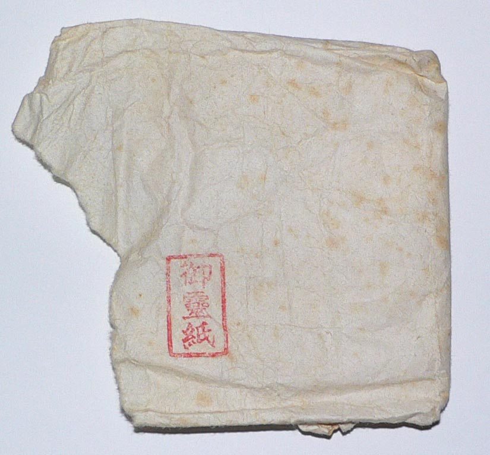
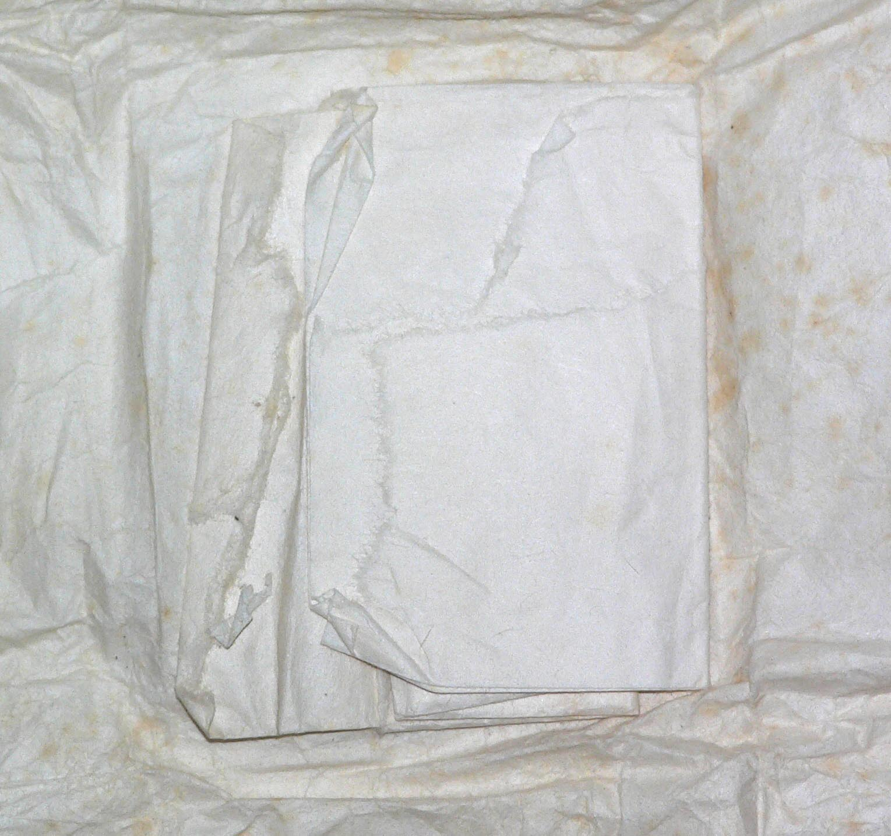
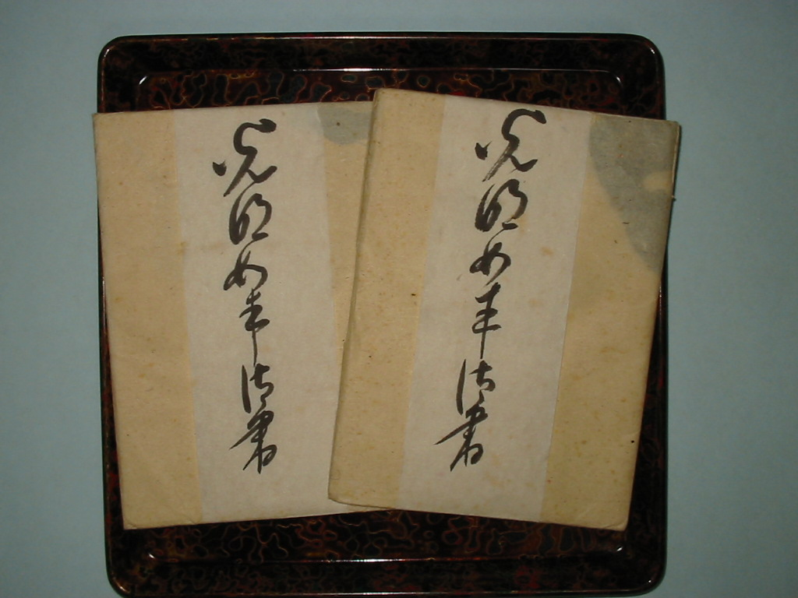
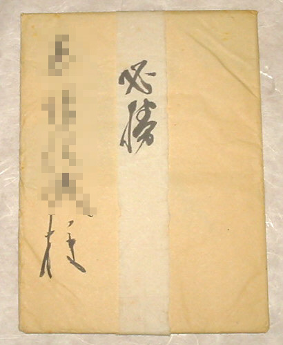
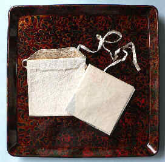
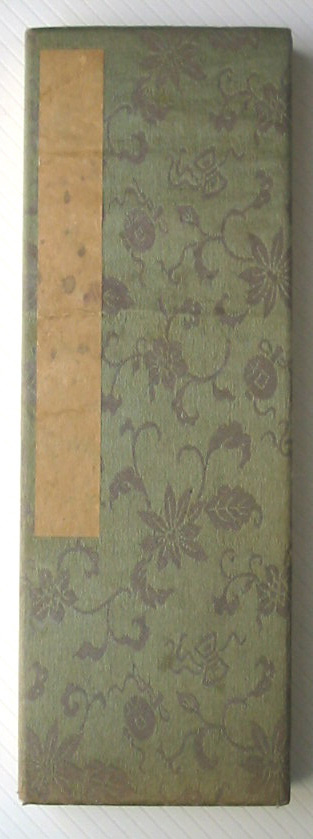
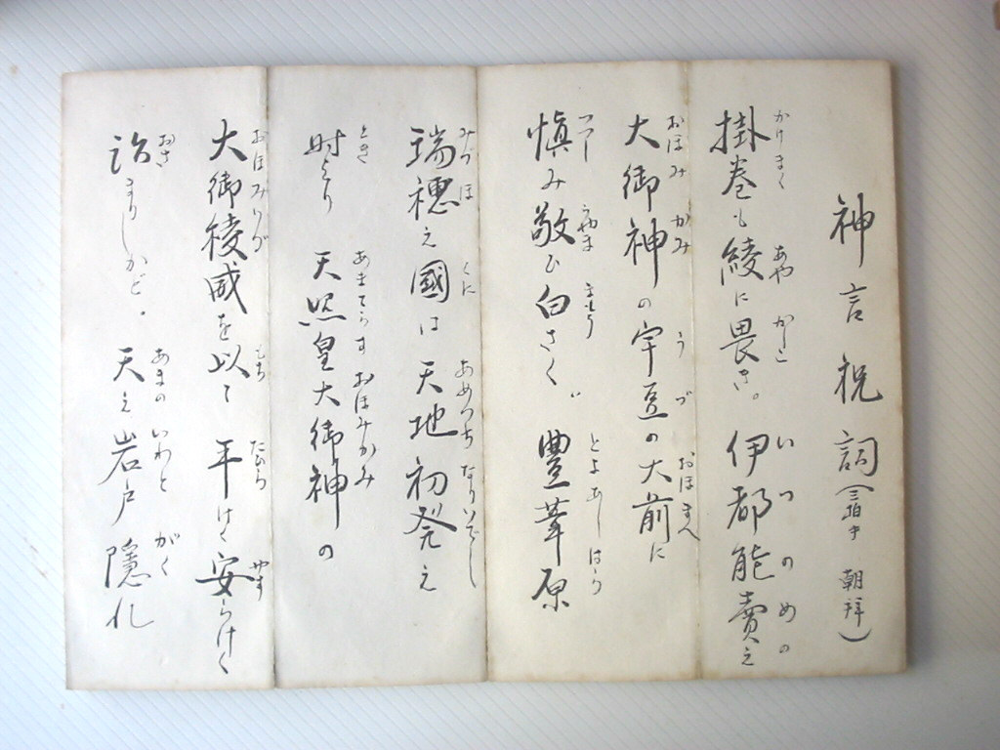
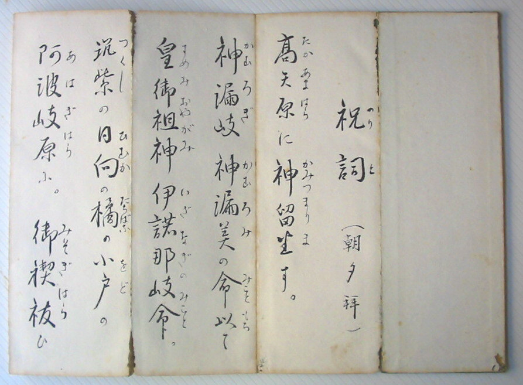
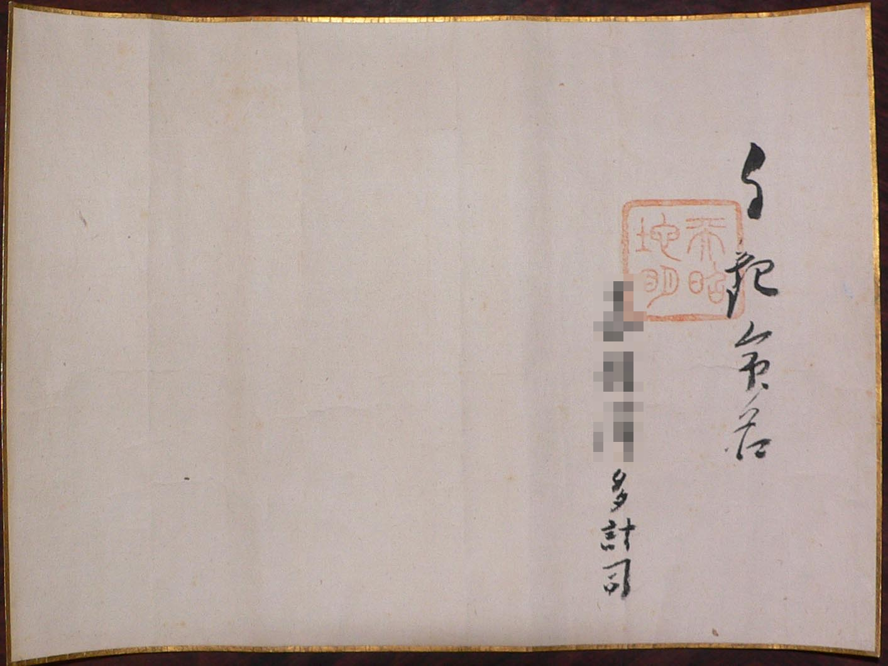

Outras Imagens
Galeria de imagens históricas — retratos, documentos sagrados, caligrafia e artefatos relacionados a Meishu-Sama.


Goreishi — Papel Sagrado
Data de recebimento desconhecida.
Após o falecimento de Meishu-Sama, durante o período Seimei-kyō, o Goreishi não era distribuído exceto em ocasiões especiais de purificação. Por isso, acredita-se que este exemplar seja do período em que Meishu-Sama ainda estava vivo, embora não se tenha certeza.

Goshin-tai — Komyō Nyorai Gosho
Dois exemplares, antes da montagem (estado original de recebimento).
Foram solicitados e recebidos, porém por alguma razão não puderam ser consagrados, permanecendo guardados.

Gosho "Hisshō" — Caligrafia Sagrada
Não montada. Foi concedida ao avô durante o período de guerra.
O avô não apreciava palavras relacionadas à guerra (embora a intenção divina fosse outra), então, junto com a caligrafia "Tekimetsu" (滅敵), permaneceu sem montagem. A caligrafia "Tekimetsu" foi cedida a um conhecido.

Omamori — Amuleto Sagrado
Amuleto "Jōryoku" (浄力) recebido pelo pai, com a bolsa de brocado dourado da época.
Os amuletos "Kōmyō" (光明) e "Jō" (浄) foram montados como quadros.
Norito — Oração Manuscrita
Contém a Amatsu Norito, Shinpon Norito e Zengen Sanji escritas à mão. Manuscrito da avó, detalhes desconhecidos.




Meimei — Certificado de Nomeação
Aparentemente emitido quando Meishu-Sama nomeou o avô. Data de nomeação desconhecida.
Após a inscrição "Jikan Meimei" (自観命名), segue-se o nome. O selo utilizado é "Tenshō Chimei" (天照地明).